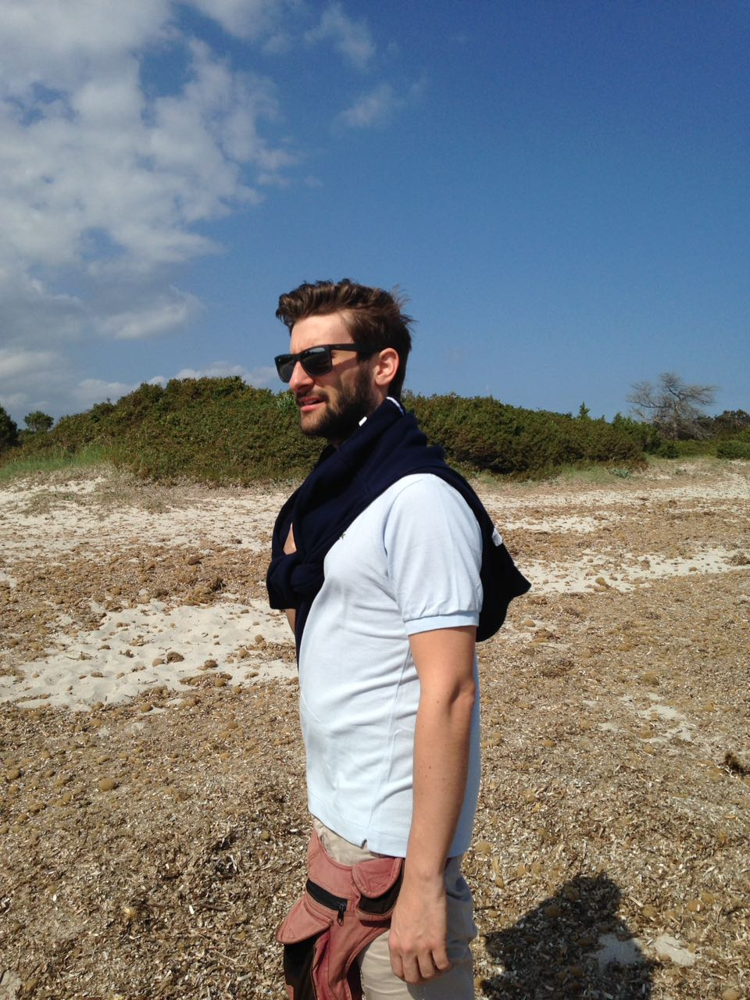

Simone Silvetti is a postdoctoral fellow at the Department of Engineering and Architecture of the University of Trieste. His research combines machine learning with quantitative formal methods to verify and design complex systems, with contributions to temporal logic specification languages and the monitoring of cyber-physical systems. His current interests include neuro-symbolic approaches that embed temporal logic formulae into continuous spaces, with applications to time series analysis and reinforcement learning. He is exploring how interpretable temporal logic patterns can be extracted from inference-time trajectories of large language models, to monitor generation at runtime and anticipate failures such as hallucinations. He also works on machine learning for edge devices, compressing computer vision models and developing audio models for insect sound recognition. He studied mathematics at Sapienza University of Rome, received a PhD in computer science from the University of Udine, and spent ten years at Esteco before joining the University of Trieste.